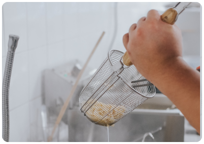
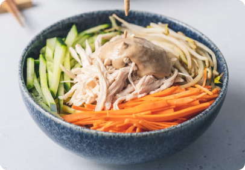

中華涼麵
#台式
#速成
#新手也可以
#消暑
簡介
「中華涼麵」是夏日經典，滋味爽口。細緻麵條搭配多種新鮮蔬菜，加上香濃醬汁，充滿層次。簡單步驟，快速上菜，滿足味蕾，驅散暑氣。
150 人說喜歡
份量
2 人份
時間
30 分鐘
食材
黃麵
1包
胡蘿蔔
1根
雞胸肉
半片
小黃瓜
1根
雞蛋
2根
涼麵醬
黃麵
1包
胡蘿蔔
1根
雞胸肉
半片
小黃瓜
1根
雞蛋
2根
料理步驟

01
- 將黃麵過水川燙就起鍋，主要是外面賣的黃麵有一層油脂，過水川燙能減少一點油膩感
- 胡蘿蔔(不用煮過) & 小黃瓜切絲，雞胸肉蒸熟後手撕成絲
- 將所有涼麵醬材料拌勻
💡 小撇步
- 調味醬的濃稠度一個人喜好可以增減開水的量
- 有些人喜歡蒜味有些不愛，所以蒜頭的量也可以增減喔
- 黃麵過水川燙就起鍋，主要是外面賣的黃麵有一層油脂，過水川燙能減少一點油膩感
02
- 熱油鍋煎蛋皮，先將兩顆蛋打散後，取一平底鍋至做蛋皮，完成後放涼準備切絲

03
- 最後就是擺盤時間囉~~~將黃麵擺中間，小黃瓜絲、胡蘿蔔絲、雞絲、蛋絲擺在面上面，淋上涼麵醬
💡 小撇步
- 也可以加火腿絲，一個人喜好調整配料囉~~